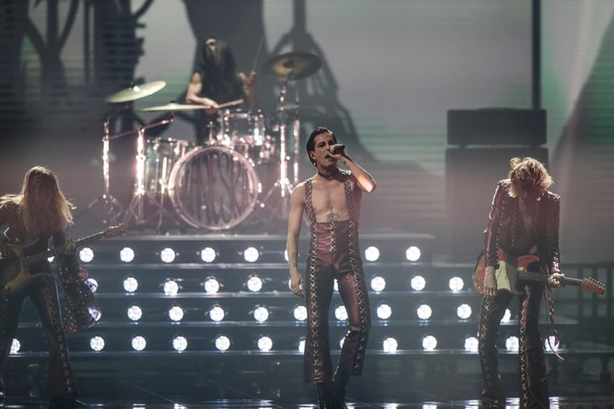

Евровидение-2021
Победителем песенного конкурса «Евровидение-2021», который в этом году проходил в Роттердаме в Нидерландах, стала группа Maneskin, представлявшая Италию. Она набрал в общей сложности 524 балла (206 от жюри и 318 от зрителей).
Результаты объявили в прямом эфире финала «Евровидения».
На втором месте с 499 баллами (248 от жюри и 251 от зрителей) — Франция , которую представляла Барбара Прави. На третьем с 432 баллами (267 от жюри и 165 от зрителей) — Швейцария (исполнитель Gjon's Tears), на четвертом с 378 баллами (198 от жюри и 180 от зрителей) — Исландия (группа Da∂i Freyr og Gagnamagni∂). Выступление только этой страны показывали в записи, поскольку у двух членов делегации обнаружили COVID-19.
Украина, которую представляла группа Go_A, в целом получила 364 балла (97 баллов от национального жюри и 267 баллов от зрителей), заняв пятое место.